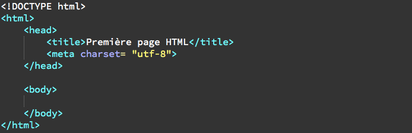

1. Définition et Rôle de HTML et CSS
HTML (Hyper Text Markup Language) a le rôle de donner du sens et de structurer les contenues d'une page web.
CSS (Cascading Style Sheets) est utilisé pour mettre en form la page web. Les standards définissant CSS sont publiés par le World Wide Web Consortium (W3C)
On n'a pas besoin un logiciel spécial pour créer une page web. Il suffit avoir un éditeur de texte, par exemple Notepad++, Sublime Text, Atom, ect. pour créer un ficher sous form .html
2. Les différentes versions de HTML et CSS
HTML
- HTML 1: créée par Tim Berners-Lee en 1991
- HTML 2: publiée en 1994
- HTML 3: apparue en 1996
- HTML 4: en 1998, cette version permet d'exploiter CSS
- HTML 5: C'est la dernière version qu'on utilise aujourd'hui.
CSS
- CSS 1: créée en 1996
- CSS 2: apparue en 1997
- CSS 3: parue en 1999. C'est la dernière version qu'on apprend aujourd'hui.
3. Structure HTML
La structure d'une page HTML5 se présent dans la figure ci-dessous:

source
- <!DOCTYPE html> : en tête du code html. Il s'agit on est en train d'utiliser la version html5
- <html> </html> : C'est la balise principale du code. Elle englobe tout le contenu de votre page
- <head> </head> : Cett section contient l'en-tête
- <meta charset="utf-8"/>: l'encodage pour la gestion des caractères spéciaux de la langage latin
- <body> </body> : C'est la parti principale,tous les contenus de la page web doivent être écrit entre ces balise.
La structure d'une page web en HTML se présent dans la figure ci-dessous:

source
- <header> </header> : en tête de la page. Il peut contenir un logo, une image ou peut aider à la navigation
- <nav> </nav> : contient des liens permettant d'accéder à une section ou un article précise d'une page
- <section> </section> : regroupe les paragraphes d'un même thème
- <article> </article>: contenu indépendant de la page
- <aside> </aside> : information complémentaires
- <footer> </footer> : pied de page.
4. Présentation des balises
Les pages HTML sont remplies de ce qu'on appelle des balises. Une balise est présentée entre chevrons <balise>
Il y a deux types de balise ci-dessous:
- balise ouvrante <balise> & balise fermante corespondante </balise>
- balise orpheline: exemple <br/>
Voici quelques balises de base:
4.1 Balises de premier niveau
Les balise de premier niveau sont <html> </html>,<head> </head>, <body> </body>
Il sont présentés dans la
4.2 Autres balises:
| Balise |
Description |
| <meta/> |
Métadonnées de la page web |
| <title> |
Titre de la page |
<
| <em> |
Mise en valeur normale |
| <h1> |
Titre de niveau 1 |
| <h2> |
Titre de niveau 2 |
| <h3> |
Titre de niveau 3 |
| <h4> |
Titre de niveau 4 |
| <h5> |
Titre de niveau 5 |
| <h6> |
Titre de niveau 6 |
| <mark> |
Mise en valeur visuel |
| <p> |
Paragraphe |
| <strong> |
Mise en valeur fort |
| <br/> |
Retour à la ligne |
4.3 Balises de liste:
On peut utiliser les balises de liste pour mieux structurer nos textes. Il exist trois types de balise de liste présentés dans ce tableau suivant:
| Balise |
Description |
| <ul> |
Liste non ordonnée |
| <ol> |
Liste ordonnée |
| <li> |
Eléments de la liste ul et ol |
| <dl> |
Liste de définition |
| <dt> |
Terme à définir |
| <dd> |
Définition du terme |
Pour en savoir plus, cliquez ici
5. Quelques techniques utiles
Insérer un commentaire
Pour insérer un commentaire afin d'expliquer aux lecteurs de notre code source de la page html, on utilise <!--Ecrire votre commentaire-->
Insérer une image
On insère une image avec la balise orpheline <img/>. A noter que'il y a deux attributs obligatoires: src(nom de l'image) et alt(une description de l'image).
Exemple, pour mettre une photo nommée "images.png" qui illustre la balise et les attributs demandés comme cette photo

On utilise <img scr="images.png" alt="balise et attributs"/>
Créer un lien
Pour insérer un lien, on utilise la balise <a/> avec l'attribut href pour indiquer l'adresse de la page cible.
Exemple: <a href="https://adresse_du_site">nom du site</a>.
Pour créer un lien dans une nouvelle onglet, on ajoute l'attribut target="_blank" avant de fermer la balise ouvrante comme ci-dessous:
<a href="adresse_du_site" target="_blank"> nom du site</a>
On peut aussi créer le lien qui permet d'amener vers d'autres endroits sur la même page.Pour faire ça, on utilise l'attribut id pour « marquer » un endroit dans la page,
puis faire un lien vers le lien souhaité comme ceci : <a href="#lien_souhaité">.
Créer un tableau
Un tableau s'insère avec la balise <table> et se définit avec <tr>. Il fault noter que les balises <tr> <tr> doivent repeter pour chaque ligne.
Ensemble de lignedans le tableau contient dans les cellules normale <td> ou cellules d'en-tête <th>
Un tableau peut être divisé en trois sections <thead>(en-tête),<tbody>(corps) et <tfoot>(bas du tableau) mais ce n'est pas obligatoire de les utiliser.
La légend du tableau se définit comme ceci: <caption>la_légend_du_tableau</caption>
Voici un exemple de code html écrit un tableau en trois parties
On peut également fusionner des cellules "colonne" grâce à l'attribut colspan ou cellules "ligne" avec rowspan. Il s'agit d'indiquer le nombre de cellules à fusionner.
Exemple: <td rowspan="2"> C'est à dire que cette celulle occupe de la place de 2 cellules.
Créer des formulaires
6. Mise en place du CSS
Ecrire
Il y a trois possibilités pour écrire du code en langage CSS:
1. Dans l'élément <head>
2. Dans la balise ouvrante d'un élément
3. Dans un fichier CSS séparé: c'est la méthode la plus recommandée
Terms CSS
Avant de commencer la mise en place du CSS, on doit comprendre les trois termes suivants:
- Sélecteur: identifie l'élément au quel un style doit être appliqué
- Propriété: détermine le style qui va être appliqué à un élément
- Valeur: détermine le comportement d'unr prioriété